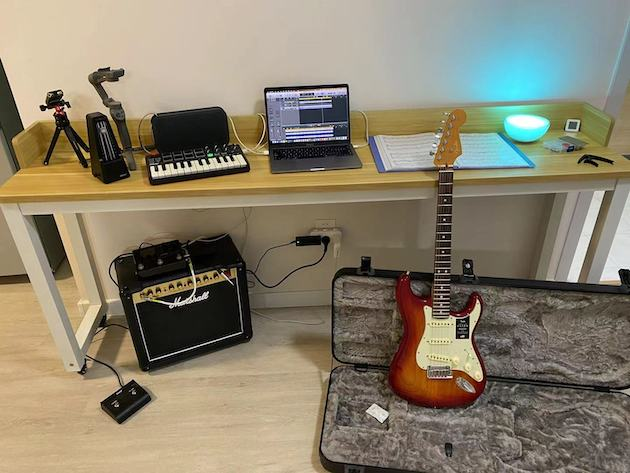
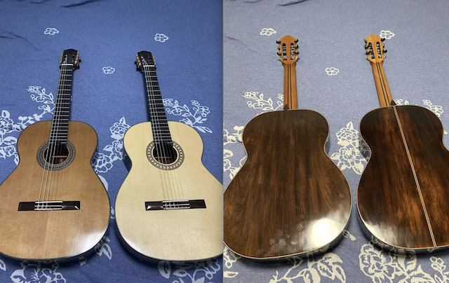
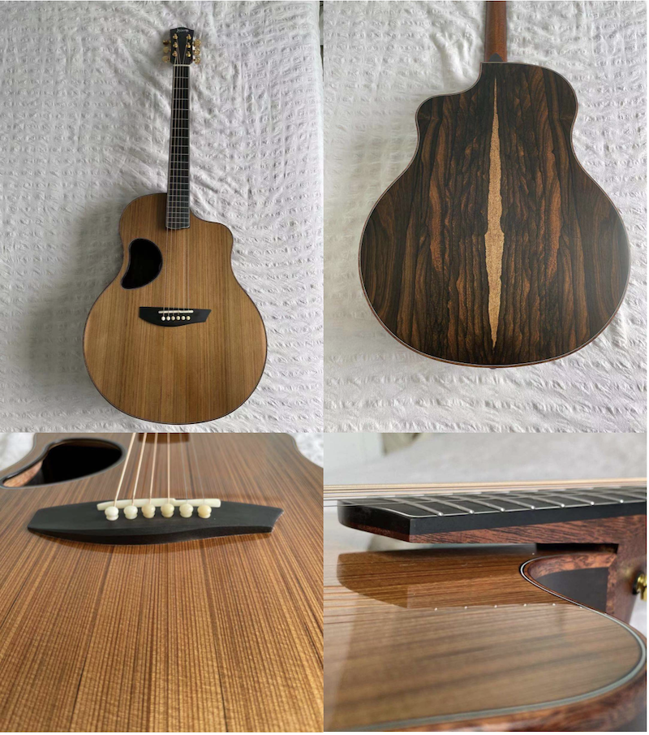
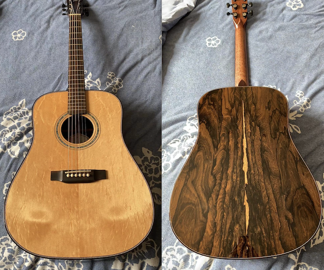
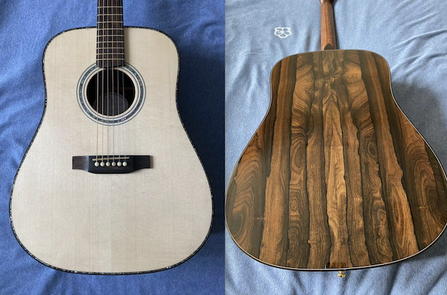
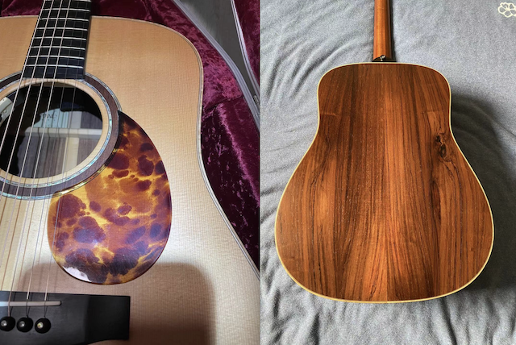
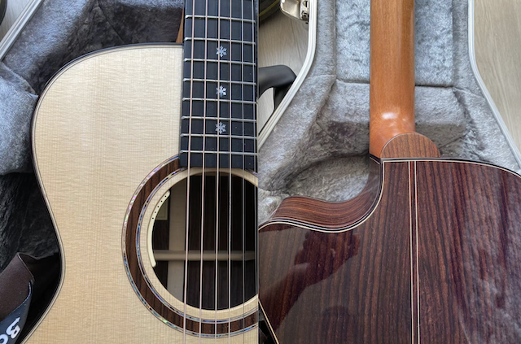
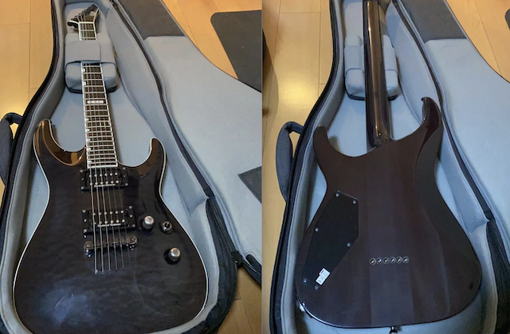
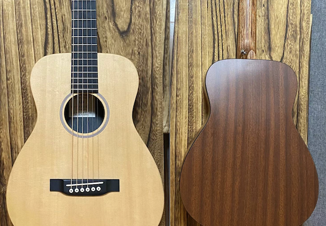

For a while, I'm quite enthusiastic of buying guitars. But not long later, I ran out of money and began to sell guitars…
-
Fender American Ultra Stratocaster
Body: Ash;
Figerboard: Rosewood;
Finishes: Plasma Red Burst;
Year: 2019

-
Customized classical guitars
Body shape: Torres;
Top: Spruce & Cedar;
Back & Side: Madagascar Rosewood;
Cutaway: Round;
Finishes: Shellac;
Year: 2020

-
弦墨 Hsienmo 师夷
This piece is a mimic model of McPherson Guitar. The operator of Hsienmo decompose a McPherson 5.0 in 2019 and not soon he decided to rebuild the model. He raise money by crowdfunding where each participants paid around 8000 RMB. Once he succeeded to reconstruct the double top guitar, the funders would obtain a piece and the delivering date was a puzzle. While I joined the crowdfunding by coincedence. I was buying another model pricing lower the 8000 RMB, but found several flaws then. I talked to boss and we agreed to let me jump into the waiting list. After around 1 year, I finally get the piece. Though I do not play the acoustic guitar often, I have to say this one is extraordinary, which reminds me of my Lakewood D54, even better.
Body shape: McPherson MG SERIES;
Top: Sinker Redwood & European Spruce
Back & Side: Ziricote;
Cutaway: Round;
Finishes: Open-pored;
Tuners: Gotoh SGL510Z
Year: 2021

-
弦墨 Hsienmo
Body shape: Dreadnought;
Top: Bear Claw Spruce;
Back & Side: Ziricote;
Cutaway: Round;
Finishes: Polished;
Year: 2020

-
弦墨 Hsienmo (sold)
Body shape: Dreadnought;
Top: Adirondack Spruce;
Back & Side: Ziricote;
Cutaway: Round;
Finishes: Polished;
Year: 2020

-
Lakewood D54 custom (sold)
Body shape: Dreadnought;
Top: Engelmann Spruce;
Back & Side: Brazilian Rosewood;
Cutaway: Round;
Finishes: Open-pored;
Year: 2005

-
Lakewood M32CP (sold)
Body shape: Grand Concert;
Top: European Spruce;
Back & Side: East Indian Rosewood;
Cutaway: Round;
Finishes: Polished;
Year: 2017

-
ESP HORIZON-II NT (sold)
Body: Mahogany;
Figerboard: Ebony;
Finishes: Purple;
Year: 2009

-
Martin LX1 (sold)
Body shape: Travel Guitar;
Top: Spruce;
Back & Side: HPL;
Cutaway: Round;
Finishes: Open-pored;
Year: 2016
